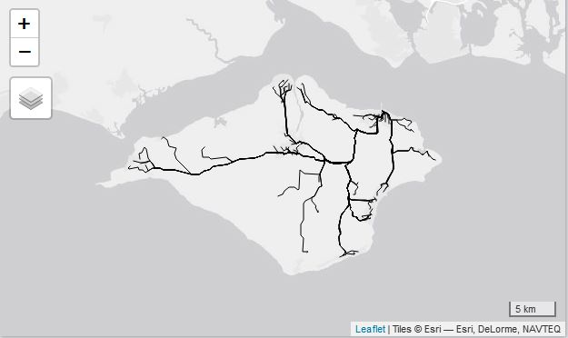
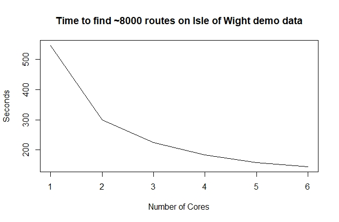
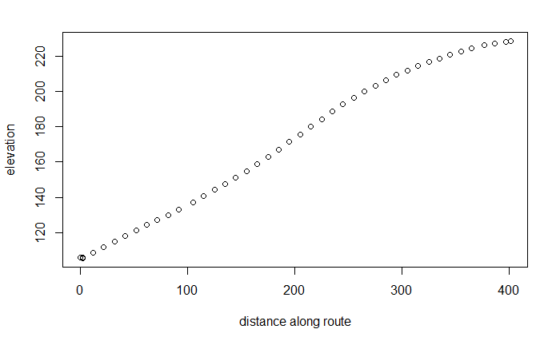
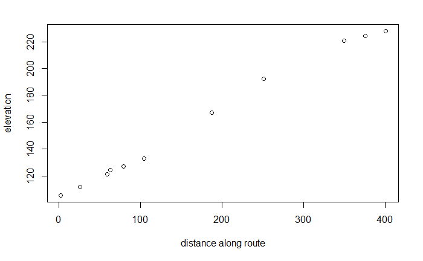
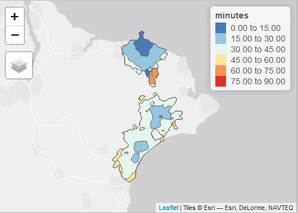

Advanced Features
Malcolm Morgan
2021-07-21
Source:vignettes/advanced_features.Rmd
advanced_features.RmdIntroduction
The vignette introduces some of the more advanced features of OTP and gives some examples of the types of analysis that are possible when using OTP and R together.
Recap
For this vignette, we will use the same data as the Getting Started vignette vignette. If you have not yet created the example graph you can set it up with the following commands. If you are using non-default settings see the Getting Started vignette for full details.
library(opentripplanner)
# Path to a folder containing the OTP.jar file, change to where you saved the file.
path_data <- file.path(tempdir(), "OTP")
dir.create(path_data)
path_otp <- otp_dl_jar()
otp_dl_demo(path_data)
# Build Graph and start OTP
log1 <- otp_build_graph(otp = path_otp, dir = path_data)
log2 <- otp_setup(otp = path_otp, dir = path_data)
otpcon <- otp_connect(timezone = "Europe/London")Batch Routing
The otp_plan() function can produce multiple routes at once. In this example, we will gather data on travel times between each of the LSOAs on the Isle of White and the Ryde Ferry.
otp_plan() accepts three types of input for the fromPlace and toPlace: a numeric longitude/latitude pair; a 2 x m matrix where each row is a longitude/latitude pair; or an SF data.frame of only POINTS. The number of fromPlace and toPlace must be the same or equal one (in which case otp_plan() will repeat the single location to match the length of the longer locations.
We’ll start by importing the locations of the LSOA points.
lsoa <- sf::st_read("https://github.com/ropensci/opentripplanner/releases/download/0.1/centroids.gpkg",
stringsAsFactors = FALSE)
head(lsoa)Then we will define our destination as the Ryde Ferry:
toPlace <- c(-1.159494,50.732429)Now we can use the otp_plan() to find the routes
routes <- otp_plan(otpcon = otpcon,
fromPlace = lsoa,
toPlace = toPlace)You may get some warning messages returned as OTP is unable to find some of the routes. The otp_plan() will skip over errors and return all the routes it can get. It will then print any messages to the console. You will have also noticed the handy progress bar.
You can plot the routes using the tmap package.
If you do plot all the routes it should look something like this:

Driving Routes to Ryde Ferry
All to All routing
It is sometimes useful to find the route between every possible origin and destination for example when producing an Origin-Destination (OD) matrix. If you wished to route from every LSOA to every other LSOA point this can easily be done by repeating the points.
toPlace = lsoa[rep(seq(1, nrow(lsoa)), times = nrow(lsoa)),]
fromPlace = lsoa[rep(seq(1, nrow(lsoa)), each = nrow(lsoa)),]Warning routing from all points to all other point increases the total number of routes to calculate exponentially. In this case, 89 points results in 89 x 89 = 7921 routes, this will take a while.
For an OD matrix, you may only be interested in the total travel time and not require the route geometry. By setting get_geometry = FALSE in otp_plan() R will just return the meta-data and discard the geometry. This is slightly faster than when using get_geometry = TRUE and uses less memory.
For example to make a travel time matrix:
routes <- otp_plan(otpcon = otpcon,
fromPlace = fromPlace,
toPlace = toPlace,
fromID = fromPlace$geo_code,
toID = toPlace$geo_code,
get_geometry = FALSE)
routes <- routes[,c("fromPlace","toPlace","duration")]
# Use the tidyr package to go from long to wide format
routes_matrix <- tidyr::pivot_wider(routes,
names_from = "toPlace",
values_from = "duration") Notice the use of fromID and toID this allows otp_plan to return the LSOA geo_code with the routes. This can be useful when producing many routes. If no IDs are provided otp_plan will return the latitude/longitude of the fromPlace and toPlace.
Multicore Support
OTP supports multicore routing out of the box. This is based on one core per route, so is only suited to finding a large number of routes. The otp_plan() function has the argument ncores = 1 this can be changed to any positive integer to enable multicore processing e.g. ncores = 4. It is recommended that the maximum value for ncores is one less than the number of cores on your system. This allows one core to be left for the operating system and any other tasks.
This graph demonstrates the reduction in time taken to route between all LSOA pairs on the Isle of Wight demo, using one to six cores.

Multicore performance improvements
Distance Balancing
When using multicore routing in otp_plan you can optionally set distance_balance = TRUE. Distance Balancing sorts the routes by decreasing euclidean distance before sending them to OTP to route. This results in more efficient load balancing between the cores and thus a small reduction in routing time (around five percent). As the original order of the inputs is lost fromID and toID must be specified to use distance balancing.
Elevation Profiles
For walking and cycling routes the hilliness of the route matters. If elevation data is available OTP will return the elevation profile of the route. By default, OTP returns the elevation separately from the XY coordinates, but for convenience otp_plan() has the argument get_elevation which matches the Z coordinates to the XY coordinates. This may result in some minor misalignments. To demonstrate this, let’s get a walking route.
route <- otp_plan(otpcon = otpcon,
fromPlace = c(-1.18968, 50.60096),
toPlace = c(-1.19105, 50.60439),
mode = "WALK",
get_elevation = TRUE
full_elevation = TRUE)Notice the use of full_elevation = TRUE this will return the raw elevation profile from OTP.
We can view the raw profile. It is a data.frame of 3 columns, first is the distance along a leg of the route, second is the elevation, and distance is calculated by otp_plan() as the cumulative distance along the whole route.
As of version 0.3.0.0 the get_elevation argument in otp_plan is set to FALSE by default, this speeds up routing by only returning XY coordinates rather than XYZ coordinates.
profile_raw <- route$elevation[[1]]
plot(profile_raw$distance, profile_raw$second, type = "p",
xlab = "distance along route", ylab = "elevation")
Elevation profile from raw data
To get an elevation profile from the XYZ coordinates is a little more complicated. The sf::st_coordinates function returns a matrix of the XYZ coordinates that make up the line. The geodist package provides a quick way to calculate the lengths in metres between lng/lat points.
profile_xyz <- sf::st_coordinates(route)
dists <- geodist::geodist(profile_xyz[,c("X","Y")], sequential = TRUE)
dists <- cumsum(dists)
plot(dists, profile_xyz[2:nrow(profile_xyz),"Z"], type = "p",
xlab = "distance along route", ylab = "elevation")
Elevation profile from XZY coordinates
Notice that there is less detail in the XYZ graph as the Z coordinates are only matched to a change in XY coordinates, i.e. you only check the elevation when there is a turn in the road.
Isochrones
Isochrones are lines of equal time. Suppose we are interested in visualising how long it takes to access Ryde ferry using public transport from different parts of the island. We will do this by requesting isochrones from OTP for 15, 30, 45, 60, 75 and 90 minutes. This can be achieved with a single function otp_isochrone().
Note isochrones are currently only reliable for “Walk” and “Transit” modes.
ferry_current <- otp_isochrone(otpcon = otpcon,
fromPlace = c(-1.159494, 50.732429), # lng/lat of Ryde ferry
mode = c("WALK","TRANSIT"),
maxWalkDistance = 2000,
date_time = as.POSIXct(strptime("2018-06-03 13:30", "%Y-%m-%d %H:%M")),
cutoffSec = c(15, 30, 45, 60, 75, 90) * 60 ) # Cut offs in seconds
ferry_current$minutes = ferry_current$time / 60 # Convert back to minutesWe can visualise the isochrones on a map using the tmap package.
library(tmap) # Load the tmap package
tmap_mode("view") # Set tmap to interative viewing
map <- tm_shape(ferry_current) + # Build the map
tm_fill("minutes",
breaks = c(0, 15.01, 30.01, 45.01, 60.01, 75.01, 90.01),
style = "fixed",
palette = "-RdYlBu") +
tm_borders()
map # Plot the mapYou should see a map like this.

Isochrones from Ryde ferry
Geo-coding
OTP has a built in geo-coder to allow you to search for places by names.
stations <- otp_geocode(otpcon = otpcon, query = "station")
head(stations)Debug Layers
For troubleshooting routing issues, you can visualise the traversal permissions of street edges, the bike safety of edges, and how transit stops are linked to streets. For these additional debug layers to be available, add ?debug_layers=true to the URL, like this: http://localhost:8080?debug_layers=true. The extra layers will be listed in the layer stack menu.
You can read more about the different debug layers in the official OTP documentation: http://docs.opentripplanner.org/en/latest/Troubleshooting-Routing/#debug-layers.
Analyst
Older versions of OTP has some limited analytical features built-in which needed to be enabled during graph build and startup. These features are accessible via the analyst = TRUE arguments of otp_build_graph() and otp_setup(). For more information see the OTP documentation
Configuring OpenTripPlanner
How OTP works can be configured using JSON files. build-config.json is used during graph building (i.e. otp_build_graph()). While router-config.json is used during setup (i.e. otp_setup()). These files must be saved with the rest of your data and each router can have a unique configuration.
To help configure OTP there are several useful functions. otp_make_config() makes a default config object and fills it with default values. It is simply a named list, so you can easily modify the values. otp_validate_config() does basic checks on a config object to make sure it is valid. Finally otp_write_config() exports the config object as a properly formatted JSON file.
A simple example of changing the default walking speed.
router_config <- otp_make_config("router") # Make a config object
router_config$routingDefaults$walkSpeed # Currently 1.34 m/s
router_config$routingDefaults$walkSpeed <- 1.5 # Increase the walking speed
otp_validate_config(router_config) # Check the new config is valid
otp_write_config(router_config, # Save the config file
dir = path_data,
router = "default")There is much more information about configuring OpenTripPlanner at https://opentripplanner.readthedocs.io/en/latest/Configuration/